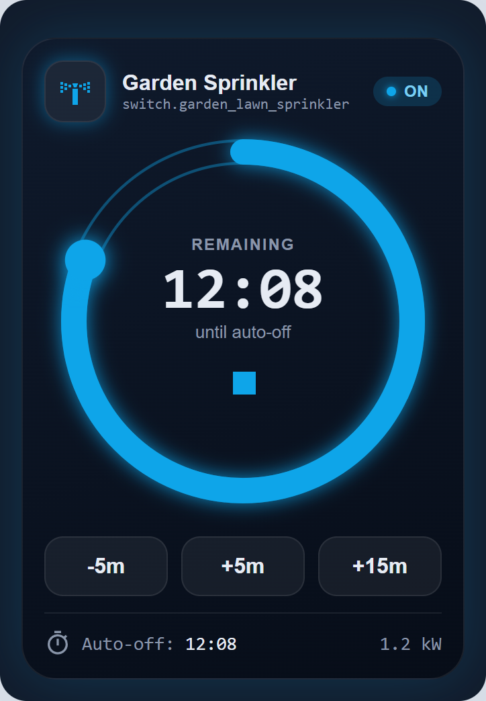
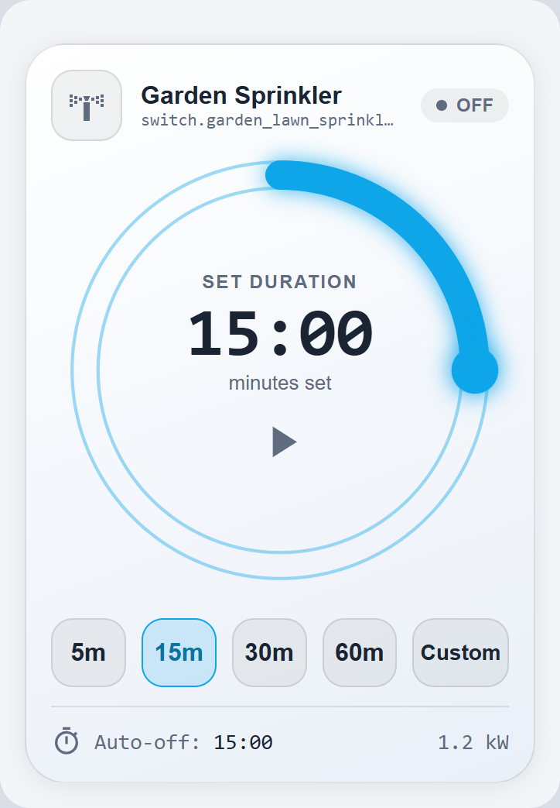
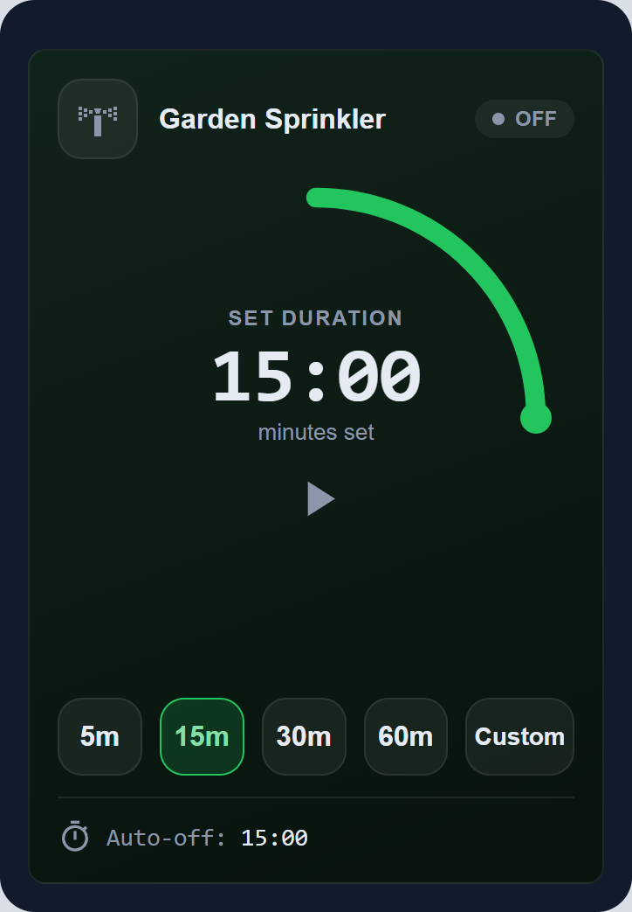
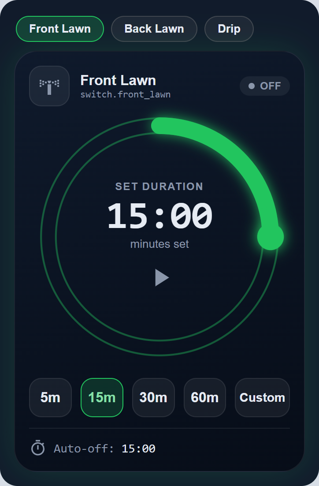
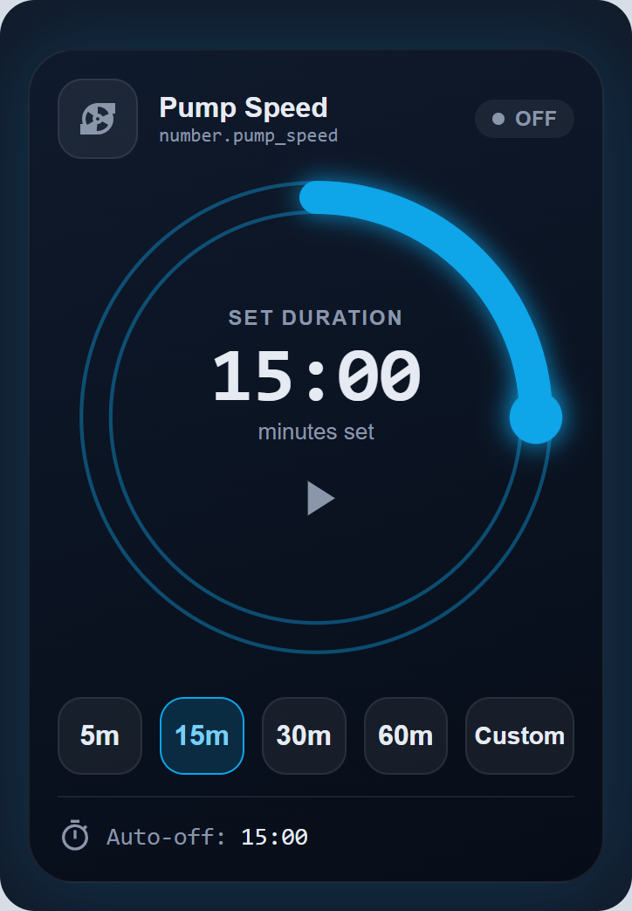
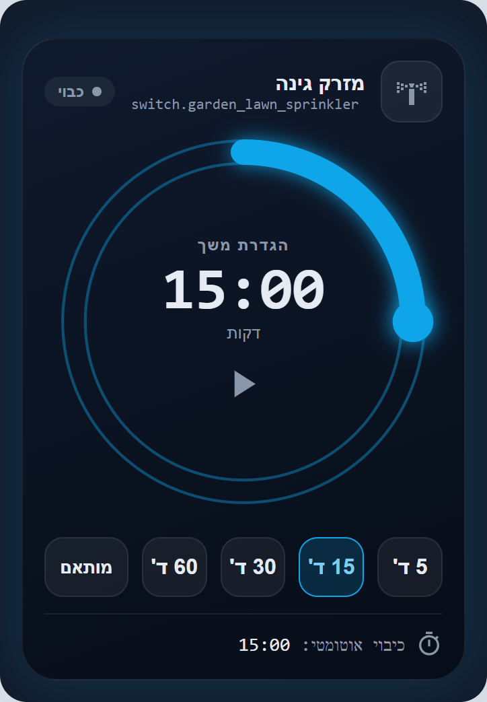
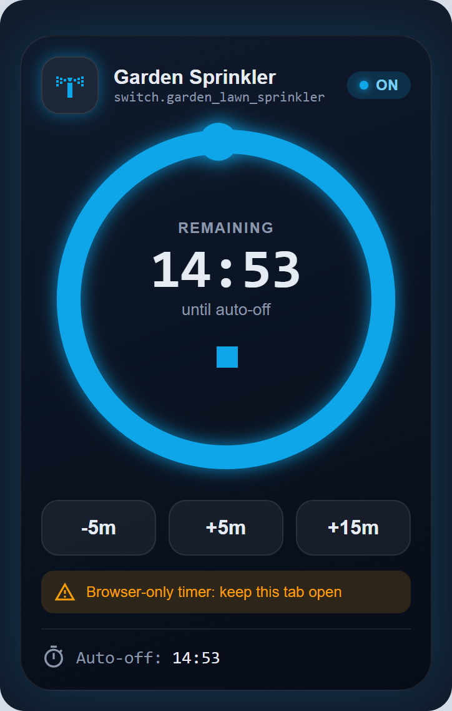

What you get
Zero setup
Select the entity. The card creates its own timer helper and auto-off automation the first time an admin presses play. Nothing to write in YAML.
Server-side shut-off
The timer lives in Home Assistant, survives restarts and stays in sync across every dashboard and phone.
Fast to use
Drag the ring, tap 5, 15, 30 or 60 minutes, or type a custom value. Extend or shorten while it runs.
Safe
Optional max_run cap, a visible warning when a run depends on an open tab, and a notification when it finishes.
Not only switches
Works with switch, input_boolean, light, fan, cover, valve, and number entities with value restore.
Yours to style
Light and dark themes, colors, bar thickness, sizes, Hebrew with right-to-left layout, and show or hide any section.
Screenshots







Install
- Add the repository. In Home Assistant open HACS, menu, Custom repositories. Add
bareli/timed-switch-cardwith type Dashboard. - Download it. Find Timed Switch Card in HACS and press Download. HACS registers the resource
/hacsfiles/timed-switch-card/timed-switch-card.js. If it did not, add it under Settings, Dashboards, Resources as a JavaScript module. - Reload the browser. Hard refresh (Ctrl+F5) so the new file loads.
- Add the card. Edit a dashboard, Add card, search for Timed Switch Card, pick your entity.
- Press play once as an admin. This creates the timer helper and the auto-off automation. After that every user gets server-side auto-off.
Manual install: copy timed-switch-card.js to /config/www/ and add the resource /local/timed-switch-card.js.
Configuration
The visual editor covers every option. In YAML the minimum is:
type: custom:timed-switch-card
entity: switch.garden_lawn_sprinklerA fuller example:
type: custom:timed-switch-card
entity: switch.garden_lawn_sprinkler
name: Garden Sprinkler
power_entity: sensor.sprinkler_power
presets: [5, 15, 30, 60]
max: 60
max_run: 120
default: 15
extend_step: 5
notify: notify.mobile_app_phone
theme: auto
accent_color: "#0ea5e9"Behavior
| Option | Default | Meaning |
|---|---|---|
entity | required | Entity to control. |
name, icon | from entity | Title and icon override. |
power_entity | Sensor shown at the bottom right, for example power in kW. | |
presets | [5, 15, 30, 60] | Preset buttons, in minutes. Presets above max_run are hidden. |
max | 60 | Minutes represented by a full ring. |
max_run | 1440 | Safety cap: the longest allowed run, applied to presets, custom input and extending. |
default | 15 | Starting duration. The last used duration is remembered per entity in each browser. |
step | 1 | Ring drag step in minutes. |
extend_step | 5 | Running buttons are minus step, plus step and plus three steps. |
timer_entity | auto-created | Reuse your own timer helper. You then own the off automation. |
notify | A notify service, for example notify.mobile_app_phone, called by the automation when the run ends. | |
on_value, off_value | entity max, previous | Number entities only. See below. |
haptics | true | Vibrate on tap on phones. |
sound | false | Beep in the browser when finished. |
remember_duration | true | Remember the last duration. |
Look
| Option | Default | Meaning |
|---|---|---|
theme | auto | auto follows Home Assistant, or dark, light. |
language | auto | en or he. Hebrew also switches to right-to-left. |
accent_color | #0ea5e9 | Bar, knob, active button and glow. Hex string or [r, g, b]. |
text_color, muted_color | theme | Main and secondary text. |
background | theme | Any CSS background, solid or gradient. |
border_radius | 26 | Corner radius in px. |
arc_width | 13.5 | Progress bar thickness. |
ring_size | 280 | Maximum ring diameter in px. |
glow, show_rings | true | Glow effect and the thin ring lines. |
show_header, show_entity_id, show_presets, show_custom, show_extend, show_footer, show_last_run | true | Show or hide each part of the card. |
Number entities
For number and input_number the card sets a value while running, then restores it.
type: custom:timed-switch-card
entity: number.pump_speed
on_value: 80 # default: the entity's max
off_value: previous # default; or a fixed number such as 0previous is the value the entity had when the run started. It is written into the auto-off automation at start, so the restore also happens on the server.
Several zones in one card
type: custom:timed-switch-card
entities:
- switch.front_lawn
- entity: switch.back_lawn
name: Back
presets: [10, 20, 40]
accent_color: "#22c55e" # shared options apply to every zoneMulti-zone cards are edited in YAML.
How auto-off works
When an admin presses play for an entity for the first time, the card creates two things in Home Assistant:
- a
timerhelper namedtimer.tsc_<domain>_<object_id> - an automation
tsc_<domain>_<object_id>that runs the off action when that timer finishes
Pressing play turns the entity on and starts the timer. Extending or shortening restarts the timer with the new remaining time. When the timer finishes, the automation turns the entity off and sends the optional notification. The card only displays the countdown, so closing it changes nothing.
To remove everything, delete the timer helper and the automation under Settings. The card creates them again next time an admin presses play.
FAQ
The card says "Custom element doesn't exist"
The JavaScript resource is not loaded. Check Settings, Dashboards, Resources for /hacsfiles/timed-switch-card/timed-switch-card.js and hard refresh the browser.
An amber warning says "Browser-only timer"
The run is not backed by a server timer. Either the current user is not an admin and no helper exists yet, or creating the helper failed. Press play once as an admin. The entity will then be turned off by Home Assistant even if the tab closes.
It turned my entity off when I did not expect it
The automation runs whenever the timer finishes. If you reuse a timer with timer_entity, anything else that starts that timer also triggers the off action. Use a timer dedicated to the card.
The +5m button restarts my timer. Is that a problem?
No. Home Assistant's timer.change cannot exceed the timer's original length, so the card restarts the timer with the new remaining time. The finish still fires exactly once.
Does "Last ran" show runs from other devices?
No. It and the remembered duration are stored in the browser that started the run.
Can I use it with a valve, cover or light?
Yes. Valves use open and close, covers use open and close, and everything else uses turn on and turn off.